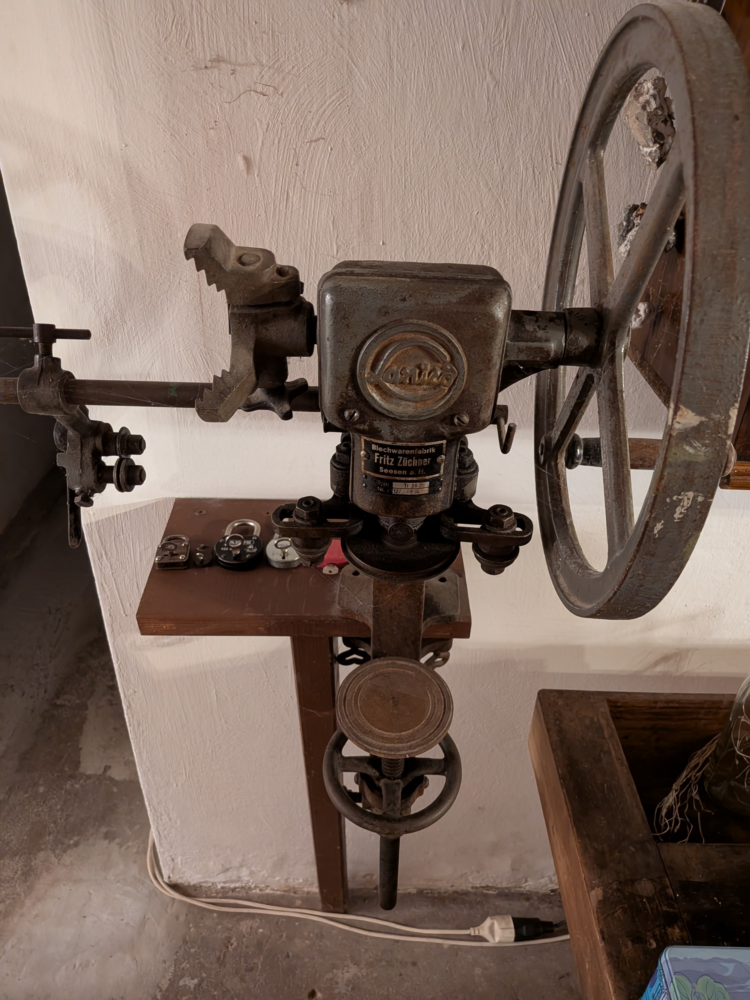
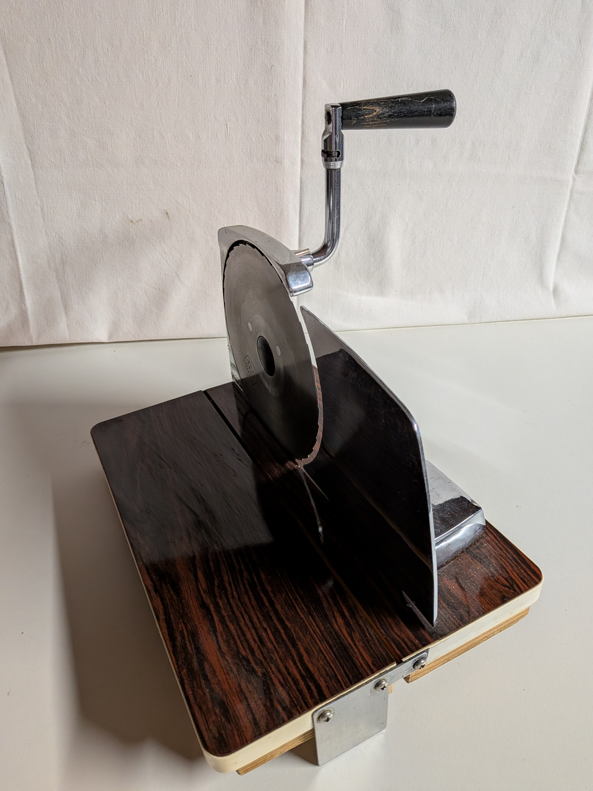
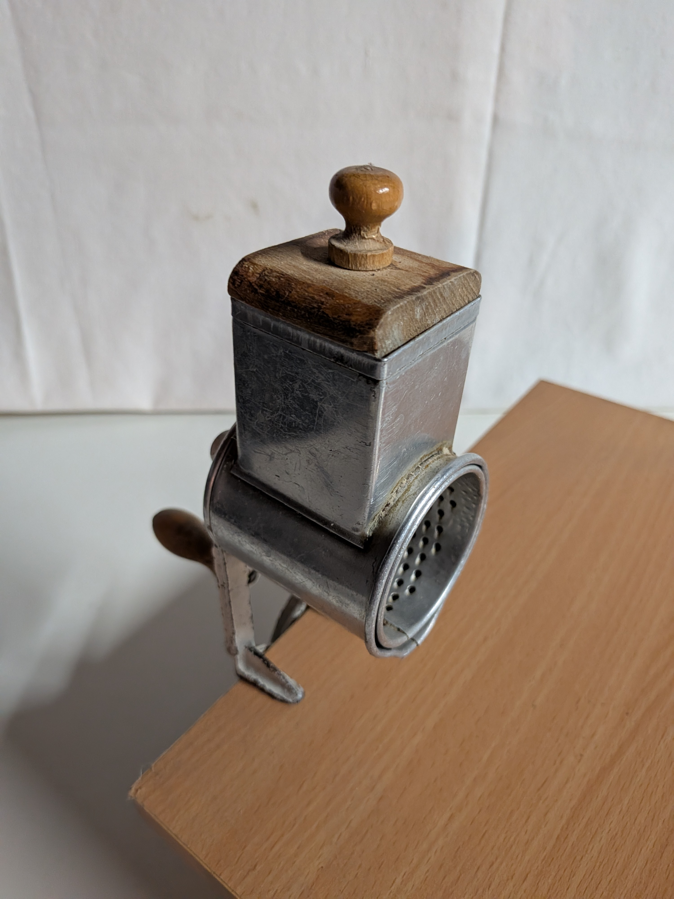
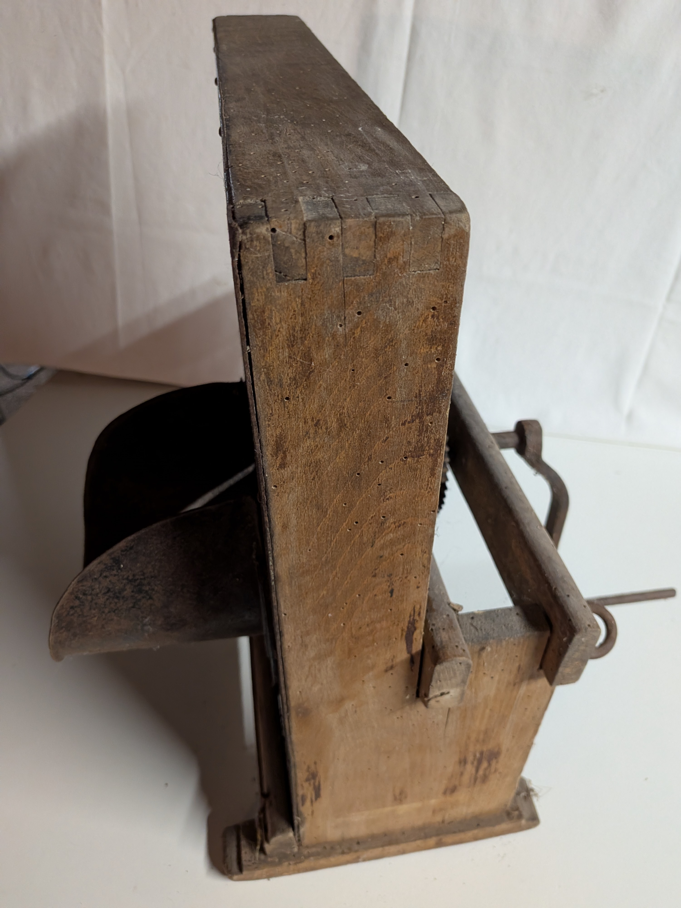
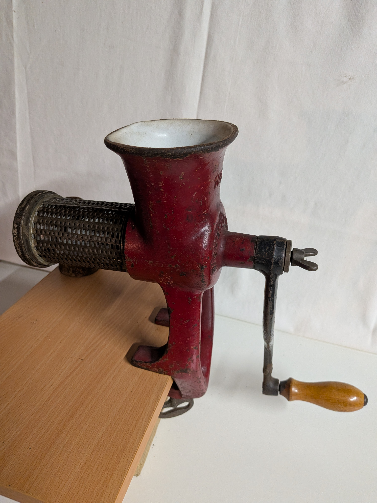
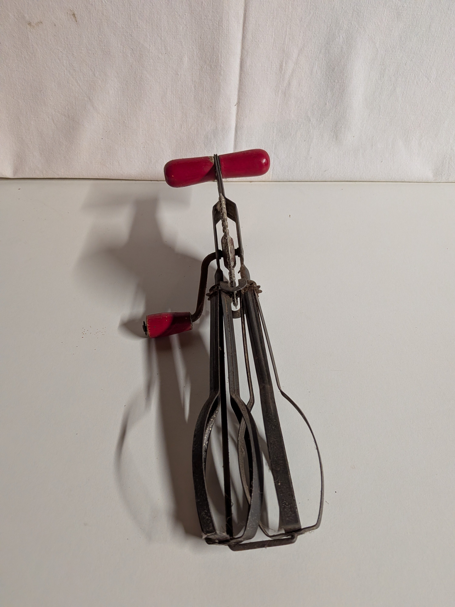
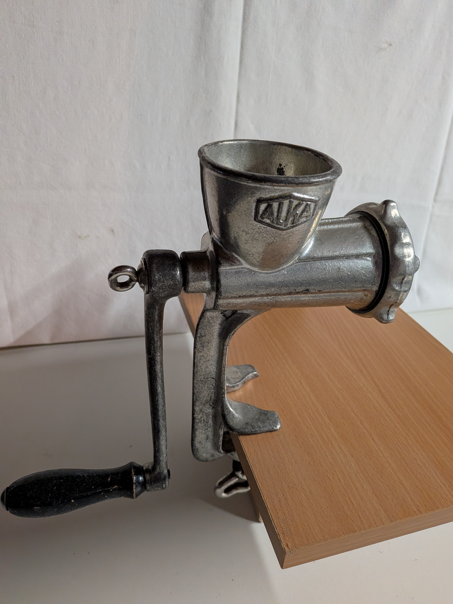
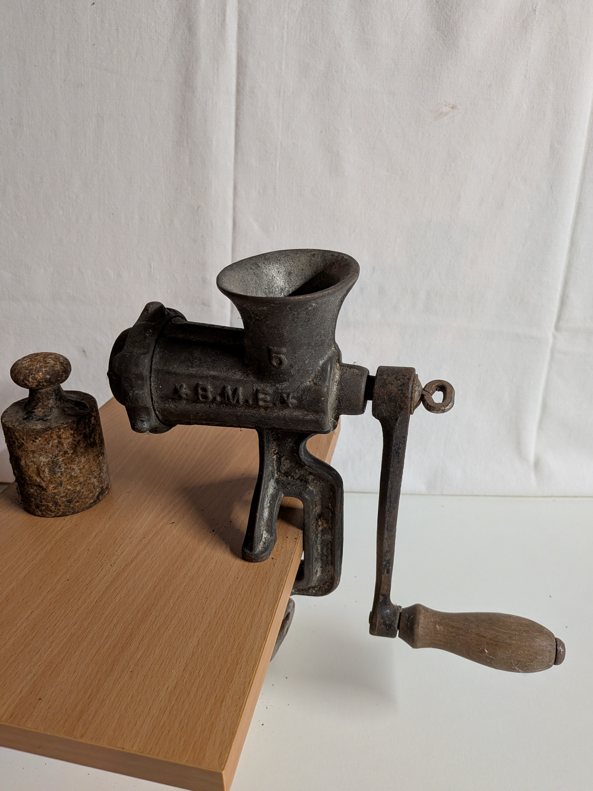
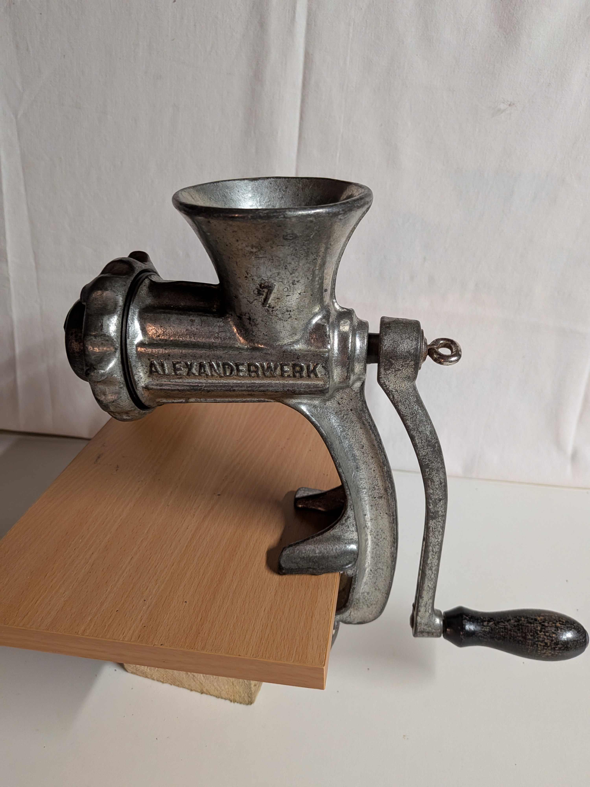

Dein Exemplar steht auf einem stabilen Holzrahmen, wie er für frühe Haushaltsseparatoren typisch war.
Die Milch wird in die Schüssel gegeben, in der rotierenden Trommel durch Fliehkraft in Rahm und Magermilch getrennt und über zwei getrennte Ausläufe abgeführt –
ein wichtiges Gerät für die Butter- und Rahmproduktion auf Bauernhöfen der 1920er und 1930er Jahre.

Bohnenschneider Pe De (Gussmodell, ca. 1930–1940)
Spätere Ausführung des Bohnenschneiders von Pe De mit lackiertem Gussgehäuse in Rot.
Die Firma Peter Dienes war bekannt für hochwertige Metallverarbeitung und fertigte neben Kaffeemühlen auch Küchenmaschinen.
Dieses Modell zeigt die Weiterentwicklung hin zu stabilen, hygienisch lackierten Geräten der Zwischenkriegszeit.
Die Kurbel treibt ein rotierendes Messerwerk an, das die Bohnen präzise in gleichmäßige Streifen schneidet.

Fleischwolf Alexanderwerk 10 (ca. 1930–1945)
Kompakter Fleischwolf aus Gusseisen für den Haushalt. Typisch für die Vorkriegs- und Kriegszeit.

Dosenverschlussmaschine Lanico TR38 / Trumpf 38 (ab 1938)
Halbautomatische Dosenverschlussmaschine des Bremer Herstellers Lanico Maschinenbau GmbH.
Das Modell TR38 – auch unter der Bezeichnung „Trumpf 38“ bekannt – wurde ab 1938 gefertigt und diente zum Verschließen von Konservendosen in Haushalten und kleinen Betrieben.
Auf dem Typenschild vieler Geräte erscheint die Firma Fritz Züchner aus Berlin,
die keine Maschinenbaufirma, sondern ein bedeutender Blechdosenhersteller war.
Züchner trat hier als Vertriebspartner auf und brachte die Maschinen unter eigenem Namen in den Handel.
Die Kurbel bewegt den Verschlusskopf, der den Deckel fest auf die Konservendose presst –
ein typisches Gerät der Übergangszeit zwischen handbetriebenen und industriellen Konservierungsmaschinen.

Fleischwolf Alexanderwerk 20N (ca. 1940–1955)
Robuster Fleischwolf für Haushalt und kleine Metzgereien. Nachkriegsmodell mit Holzkurbel.

Brotschneider (ca. 1940–1950)
Mechanischer Brotschneider mit Kurbelantrieb. Schneidet Brot gleichmäßig in Scheiben –
ein typisches Gerät der frühen Nachkriegszeit.

Trommelreibe / Kurbelreibe Modell 820 (Schulte, ca. 1950–1970)
Mechanische Trommelreibe des Herstellers Schulte, Modell 820.
Mit austauschbarer Reibtrommel und Holzgriff – ideal zum Reiben von Käse, Nüssen oder Gemüse.
Typisch für die Nachkriegszeit: robustes Metallgehäuse und langlebige Mechanik.

Kohlschneider (ca. 1950–1960)
Kurbelbetriebener Hobel zum Schneiden von Weißkohl für Sauerkraut.
Das Gerät arbeitet mit scharfen Messern und einer stabilen Führung –
typisch für die Sauerkrautproduktion im eigenen Haushalt.

Kartoffelpüreegerät (ca. 1950–1960)
Mechanisches Gerät zum Pressen von Kartoffeln – Vorläufer moderner Kartoffelpressen.
Die Kurbel drückt die gekochten Kartoffeln durch ein gelochtes Sieb und erzeugt feines Püree.

Schneebesen mit Kurbel (ca. 1950–1960)
Kurbelbetriebener Schneebesen mit zwei Rührflügeln.
Ideal zum Schlagen von Sahne oder Eiweiß – ein beliebtes Küchenwerkzeug der 1950er Jahre.

ALKA Kurbelgerät (ca. 1950–1965)
Mechanisches Haushaltsgerät der Marke ALKA.
Vermutlich Reibe- oder Schneidmaschine mit Kurbelantrieb – solide Metallausführung mit Holzgriff.

BME5 Kurbelgerät (ca. 1960–1970)
Spätes mechanisches Haushaltsgerät, Übergangszeit zu elektrischen Küchenmaschinen.
Oft mit austauschbaren Einsätzen für verschiedene Schneid- und Reibfunktionen.

Alexanderwerk 7 (ca. 1960–1970)
Spätes Kurbelgerät der Firma Alexanderwerk.
Kompakte Bauform, typisch für die 1960er Jahre – Übergang zur elektrischen Küchenmaschine.